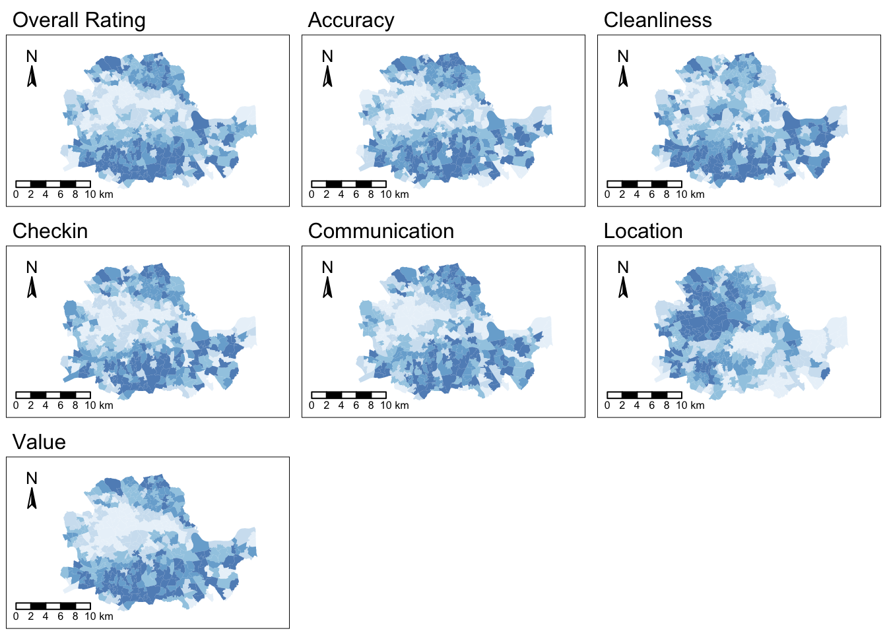
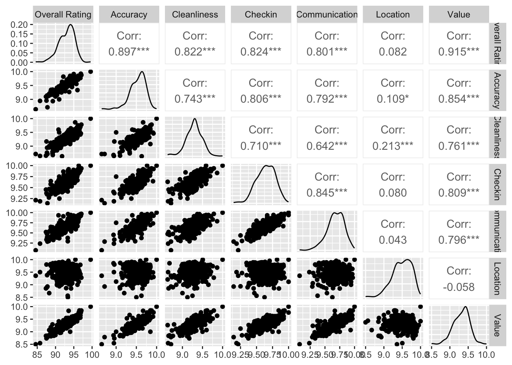
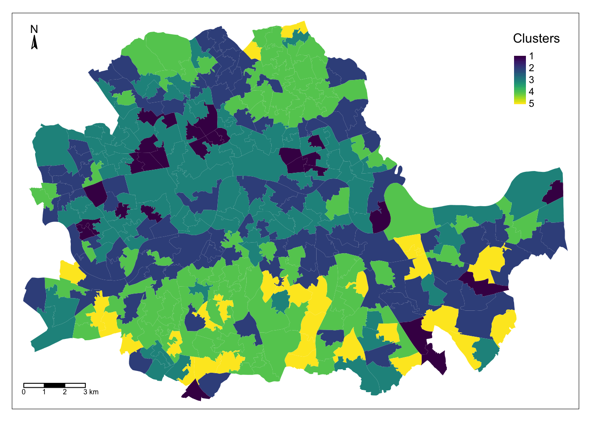
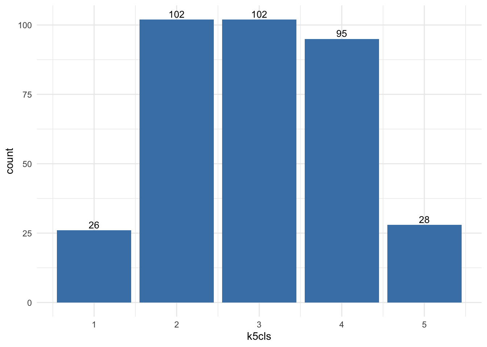
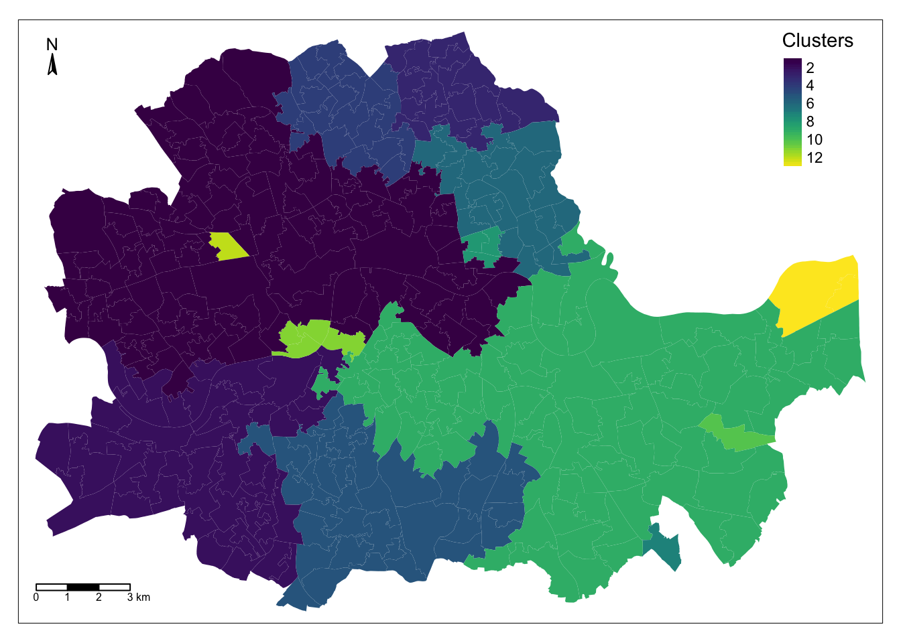
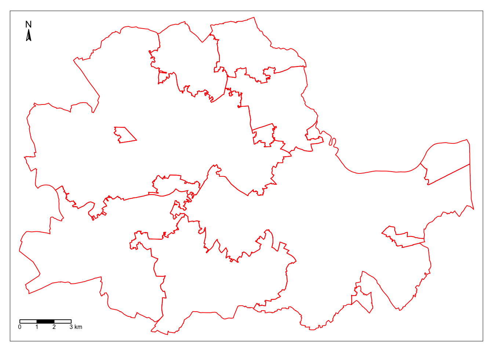
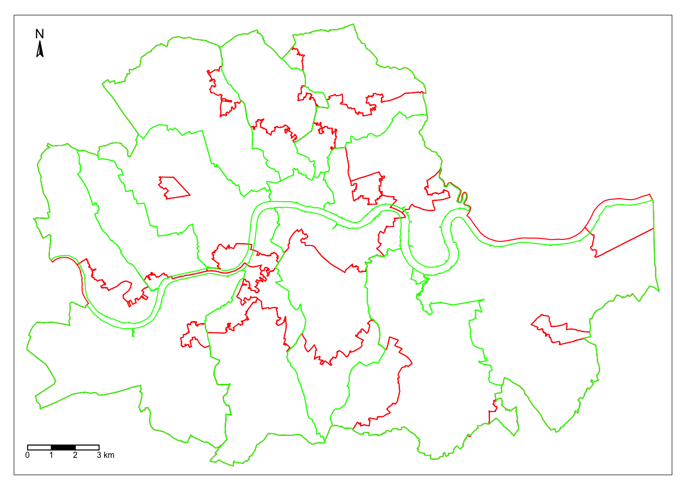

library(sf) # Loads the 'sf' package for working with spatial data, handling geometries, and performing spatial operations.
library(tmap) # Imports 'tmap' for creating thematic maps and visualizing spatial data.
library(ggplot2) # Loads 'ggplot2', a versatile package for creating high-quality visualizations and graphics.
library(viridis) # Imports 'viridis', a package offering color palettes designed for better perception by individuals with color vision deficiencies.
library(GGally) # Loads 'GGally' for extending 'ggplot2' with tools for exploring data with multiple plots.
library(cluster) # Imports 'cluster', a package for clustering methods used in data analysis.
library(tidyverse) # Loads the 'tidyverse' collection of packages (including 'dplyr', 'ggplot2', 'tidyr', etc.) for data manipulation and visualization.
library(spdep) # Imports 'spdep' for spatial econometrics and spatial statistics.
library(rgeoda) # Loads 'rgeoda' for spatial analysis using Geoda functions in R.Lab
We will start by loading the necessary libraries:
Data
The dataset we will use in this occasion is an extract from the online website AirBnb. AirBnb is a company that provides a meeting point for people looking for an alternative to a hotel when they visit a city, and locals who want to rent (part of) their house to make some extra money. The website has a continuously updated list of all the available properties in a given city that customers can check and book through. In addition, the website also provides a feedback mechanism by which both ends, hosts and guests, can rate their experience. Aggregating ratings from guests about the properties where they have stayed, AirBnb provides additional information for every property, such as an overall cleanliness score or an index of how good the host is at communicating with the guests.
The original data are provided at the property level and for the whole of London. However, since the total number of properties is very large for the purposes of this notebook, they have been aggregated at the Middle Super Output Area (MSOA), a geographical unit created by the Office of National Statistics. Although the original source contains information for the Greater London, the vast majority of properties are located in Inner London, so the data we will use is restricted to that extent. Even in this case, not every polygon has at least one property. To avoid cases of missing values, the final dataset only contains those MSOAs with at least one property, so there can be average ratings associated with them.
Our goal in this notebook is to create a classification of areas (MSOAs) in Inner London based on the ratings of the AirBnb locations. This will allow us to create a typology for the geography of AirBnb in London and, to the extent the AirBnb locations can say something about the areas where they are located, the classification will help us understand the geography of residential London a bit better. This dataset is a good example of the kind of analyses that the data revolution is making possible as, only a few years ago, it would have been very hard to obtain a similarly large survey of properties with ratings like this one. On the other hand, it is important to keep in mind the biases that these data are subject to and thus the limitations in terms of generalising findings to the general population. In any case, this dataset is a great example to learn about statistical clustering of spatial observations, both in a geodemographic analysis as well as in a regionalisation.
Let’s start by loading the main table of MSOAs:
# Read the file in
abb <- read_sf("./data/London/Polygons/london_abb.gpkg")# Inspect the structure of the table
head(abb)Simple feature collection with 6 features and 17 fields
Geometry type: POLYGON
Dimension: XY
Bounding box: xmin: -0.2134628 ymin: 51.50685 xmax: -0.07271988 ymax: 51.57298
Geodetic CRS: WGS 84
# A tibble: 6 × 18
MSOA_CODE accommodates bathrooms bedrooms beds number_of_reviews
<chr> <dbl> <dbl> <dbl> <dbl> <dbl>
1 E02000001 3.30 1.22 1.20 1.56 16.5
2 E02000166 3.66 1.47 1.73 2.05 13.3
3 E02000167 3.72 1.41 1.69 1.99 19.5
4 E02000168 4.01 1.42 1.80 2.19 18.4
5 E02000169 3.54 1.58 1.68 2.06 6.05
6 E02000170 3.09 1.31 1.47 1.78 17.0
# ℹ 12 more variables: reviews_per_month <dbl>, review_scores_rating <dbl>,
# review_scores_accuracy <dbl>, review_scores_cleanliness <dbl>,
# review_scores_checkin <dbl>, review_scores_communication <dbl>,
# review_scores_location <dbl>, review_scores_value <dbl>,
# property_count <dbl>, BOROUGH <chr>, GSS_CODE <chr>, geom <POLYGON [°]>Before we jump into exploring the data, one additional step that will come in handy down the line. Not every variable in the table is an attribute that we will want for the clustering. In particular, we are interested in review ratings, so we will only consider those. Hence, let us first manually write them in a vector called ratings so they are easier to subset. We also save names for each of the variables in ratings so we can print them out nicely later on:
ratings <- c(
'review_scores_rating', # Assigns the names of different types of review scores to a vector called 'ratings'.
'review_scores_accuracy',
'review_scores_cleanliness',
'review_scores_checkin',
'review_scores_communication',
'review_scores_location',
'review_scores_value'
)
ratings_names <- c(
'Overall Rating', # Assigns more descriptive names to the corresponding review score types.
'Accuracy',
'Cleanliness',
'Checkin',
'Communication',
'Location',
'Value'
)At the end of this computational notebook, we will also use the administrative boroughs. Let’s load them in so they are ready when we need them.
boroughs <- read_sf("./data/London/Polygons/london_inner_boroughs.geojson")Note that, in comparison to previous datasets, this one is provided in a new format, .geojson. GeoJSON files are a plain text file (you can open it on any text editor and see its contents) that follows the structure of the JSON format, widely used to exchange information over the web, adapted for geographic data, hence the geo at the front. GeoJSON files have gained much popularity with the rise of web mapping and are quickly becoming a de-facto standard for small datasets because they are readable by humans and by many different platforms. As you can see above, reading them in R is exactly the same as reading a shapefile, for example.
Getting to know the data
The best way to start exploring the geography of AirBnb ratings is by plotting each of them into a different map. This will give us a univariate perspective on each of the variables we are interested in.
Since we have many variables to plot, we will create a loop that generates each map for us and places it on a “subplot” of the main figure. Given that before we saved the names of the variables of interest as a vector called ratings, we can now make use of this to write a simpler for-loop:
# Create an empty list to store the maps
map_list <- list()
# Start the loop over all the variables of interest
for (i in 1:length(ratings)) {
# Plot the map for each column
map <- tm_shape(abb) +
tm_fill(col = ratings[i],
style = "quantile",
palette = "Blues",
alpha = 0.75) +
tm_compass(position = c(0.02, 0.7), size=1) +
tm_scale_bar(position = c(0.02, 0.001), text.size=.8, breaks = c(0,2,4,6,8,10)) +
tm_layout(main.title = ratings_names[i],
main.title.size = 1,
legend.show = FALSE,
#legend.text.size = 0.5, legend.title.size=1,
#legend.position = c(0.70,0.3),
inner.margins = c(0.1, 0.1, 0.1, 0.)) # Set the title of each map
# Append the map to the list
map_list[[i]] <- map
}
# Plotting the grid of maps
tmap_arrange(maps = map_list, nrow = 3, ncol = 3)
As we can see, there is substantial variation in how the ratings for different aspects are distributed over space. While variables like the overall rating or the communication with the host tend to higher in peripheral areas, others like the location score are more concentrated in the city centre.
Even though we only have seven variables, it is very hard to “mentally overlay” all of them to come up with an overall assessment of the nature of each part of London. We can improve our understanding of the relationships between these variables through bivariate correlations, but first let’s rename the subset initial dataset without geometry as abb_sub:
#removing the geometry information from the 'abb' spatial object while keeping specific columns related to ratings
abb_sub <- st_drop_geometry(abb[, ratings, drop=FALSE])Then, we can produce the bivariate plot:
ggpairs(abb_sub, columns = 1:length(ratings),
columnLabels = ratings_names)
The above plot is helpful to consider uni and bivariate questions such as: what is the relationship between the overall rating and location scores? (Positive) Are the overall ratings more correlated with location or with cleanliness? (Cleanliness). However, sometimes, this is not enough and we are interested in more sophisticated questions that are truly multivariate and, in these cases, the figure above cannot help us. For example, it is not straightforward to answer questions like: what are the main characteristics of the South of London? What areas are similar to the core of the city? Are the East and West of London similar in terms of the kind of AirBnb properties you can find in them? For these kinds of multi-dimensional questions -involving multiple variables at the same time- we require a truly multidimensional method like statistical clustering.
An AirBnb geodemographic classification of Inner London using K-means
A geodemographic analysis involves the classification of the areas that make up a greographical map into groups or categories of observations that are similar within each other but different between them. The classification is carried out using a statistical clustering algorithm that takes as input a set of attributes and returns the group (“labels” in the terminology) each observation belongs to. Depending on the particular algorithm employed, additional parameters, such as the desired number of clusters employed or more advanced tuning parameters (e.g. bandwith, radius, etc.), also need to be entered as inputs. For our geodemographic classification of AirBnb ratings in Inner London, we will use one of the most popular clustering algorithms: K-means. This technique only requires as input the observation attributes and the final number of groups that we want it to cluster the observations into. In our case, we will use five to begin with as this will allow us to have a closer look into each of them.
Although the underlying algorithm is not trivial, in R, k-means is very easy to implement by using the function kmeans, where some of the required arguments are: the dataset, the number of clusters (which is called centers), the number of random sets to choose nstart or the maximum number of iterations allowed. For example, for a 5-cluster classification, we would run the following line of code:
set.seed(12345) # Sets the random seed to ensure reproducibility of the randomisation process
k5cls <- kmeans(abb_sub, centers=5, iter.max = 1000)The k5cls object we have just created contains several components that can be useful for an analysis. For now, we will use the clusters, which represent the different categories in which we have grouped the data. Labels for the clusters can be extracted as follows:
head(k5cls$cluster)1 2 3 4 5 6
3 4 4 4 2 2 Each number represents a different category, so two observations with the same number belong to same group. The labels are returned in the same order as the input attributes were passed in, which means we can append them to the original table of data as an additional column:
abb$k5cls <- k5cls$clusterMapping the categories
To get a better understanding of the classification we have just performed, it is useful to display the categories created on a map. For this, we will use a unique values choropleth, which will automatically assign a different color to each category:
map_cluster = tm_shape(abb) +
tm_fill(col = "k5cls", title = "Clusters", palette = viridis(256), style = "cont") + # add fill
tm_borders(col = "white", lwd = .01) + # add borders
tm_layout(legend.position = c(0.88, 0.75)) +
tm_compass(type = "arrow", position = c("left", "top") , size = 1) + # add compass
tm_scale_bar(breaks = c(0,1,2,3), text.size = 0.5, position = c("left", "bottom")) # add scale bar
map_cluster
The map above represents the geographical distribution of the five categories created by the K-means algorithm. A quick glance shows a strong spatial structure in the distribution of the colors.
Exploring the nature of the categories
Once we have a sense of where and how the categories are distributed over space, it is also useful to explore them statistically. This will allow us to characterise them, giving us an idea of the kind of observations subsumed into each of them. As a first step, let us find how many observations are in each category. To do that, we will make use of the group_by fucntion, combined with the function summarise, which returns the number of elements in a subgroup:
freq <- abb %>% # Creates a new object 'freq' by performing operations on the 'abb' dataset.
group_by(k5cls) %>% # Groups the data by the 'k5cls' column, considering each cluster separately.
summarise(count = n()) %>% # Calculates the count of observations in each cluster and creates a 'count' column.
arrange(k5cls) # Arranges the resulting table by the 'k5cls' column in ascending order.For a more visual output:
ggplot(data=freq, aes(x=k5cls, y=count)) + # Initializes a ggplot with 'freq' data and defines x and y aesthetics.
geom_bar(stat="identity", fill="steelblue") + # Plots bars based on the count values in 'freq', with blue color.
geom_text(aes(label=count), vjust=-0.3, size=3.5) + # Adds text labels displaying the count values on top of each bar.
theme_minimal() # Applies a minimalistic theme to the plot.
As it can also be guessed from the map that we created above, groups vary in sizes.
In order to describe the nature of each category, we can look at the values of each of the variables we have used to create the cluster. Remember we used the average ratings on many aspects (cleanliness, communication of the host, etc.) to create the classification, so we can begin by checking the average value of each. To do that in R, we will rely on the outputs of the kmeans function. In particular, we can look at the “centres” of each cluster, which represent the average values in each cluster of the variables used in the clustering process:
k5cls$centers review_scores_rating review_scores_accuracy review_scores_cleanliness
1 88.46883 9.156232 8.915268
2 93.35392 9.578163 9.305274
3 91.32208 9.407599 9.164816
4 94.76661 9.680517 9.419729
5 96.27878 9.764237 9.575961
review_scores_checkin review_scores_communication review_scores_location
1 9.417369 9.453563 9.455189
2 9.657382 9.693364 9.468992
3 9.545119 9.583235 9.495194
4 9.744301 9.775071 9.529274
5 9.851993 9.859531 9.479677
review_scores_value
1 8.908922
2 9.348411
3 9.146983
4 9.468856
5 9.643258This concludes the section on geodemographics. As we have seen, the essence of this approach is to group areas based on a purely statistical basis: where each area is located is irrelevant for the label it receives from the clustering algorithm. In many contexts, this is not only permissible but even desirable, as the interest is to see if particular combinations of values are distributed over space in any discernible way. However, in other contexts, we may be interested in groups of observations that have been created following certain spatial constraints. For that, we now turn into regionalisation techniques.
Regionalisation algorithms
Regionalisation is the subset of clustering techniques that impose a spatial constraint on the classification. In other words, the result of a regionalisation algorithm contains areas that are spatially contiguous. Effectively, what this means is that these techniques aggregate areas into a smaller set of larger ones, called regions. In this context then, areas are nested within regions. Real world examples of this phenomenon includes counties within states or, in the UK, local super output areas (LSOAs) into middle super output areas (MSOAs). The difference between those examples and the output of a regionalisation algorithm is that while the former are aggregated based on administrative principles, the latter follows a statistical technique that, very much the same as in the standard statistical clustering, groups together areas that are similar on the basis of a set of attributes. Only that now, such statistical clustering is spatially constrained.
As in the non-spatial case, there are many different algorithms to perform regionalisation, and they all differ on details relating to the way they measure (dis)similarity, the process to regionalise, etc. However, same as above too, they all share a few common aspects. In particular, they all take a set of input variables or attributes and a representation of space in the form of a binary spatial weights matrix. Depending on the algorithm, they also require the desired number of output regions into which the areas are aggregated.
To illustrate these concepts, we will run a regionalisation algorithm on the AirBnb data we have been using. In this case, the goal will be to re-delineate the boundary lines of the Inner London boroughs following a rationale based on the different average ratings on AirBnb properties, instead of the administrative reasons behind the existing boundary lines. In this way, the resulting regions will represent a consistent set of areas that are similar with each other in terms of the ratings received.
Defining space formally
Very much in the same way as with ESDA techniques, regionalisation methods require a formal representation of space that is statistics-friendly. In practice, this means that we will need to create a spatial weights matrix for the areas to be aggregated.
Technically speaking, this is the same process as we have seen before, thanks to PySAL. The difference in this case is that we did not begin with a shapefile, but with a GeoJSON. Fortunately, PySAL supports the construction of spatial weights matrices “on-the-fly”, that is from a table. This is a one-liner:
# list all adjacent polygons for each polygon
nb_q <- poly2nb(abb, queen = TRUE) # Construct neighbours list from polygon list
w_queen <- nb2listw(nb_q, style = "W") # Create a spatial weights matrix using queen contiguityCreating regions from areas
At this point, we have almost all the pieces needed to run a regionalisation algorithm. For this example, we will use a spatially-constrained version of the agglomerative algorithm. This is a similar approach to that used above, although the inner-workings of the algorithm are quite different. In this case, observations can only be labelled in the same group if they are spatial neighbors, as defined by our spatial weights matrix. Before running the algorithm, we need to convert the spatial weights matrix into a format that the algorithm can understand. In our case, this format is the “minimal spanning tree”. You don’t need to understand what this is, but you need to know how to obtain it in R. Using the mstree function from the spdep package, this is straightforward:
tree_queen <- mstree(w_queen)And just one more step before running the regionalisation algorithm! The data needs to be standardised by column. To do this, we apply the function scale() to each of the columns in abb_sub, which is the dataset containing the data of interest:
# creates a copy of the data frame
df_std <- abb_sub
# extracts column names from df_std
colnames_df_std <- colnames(df_std)
# loops columns from position 1 : the last column
for(i in 1: ncol (df_std)){
df_std[, colnames_df_std[i]] <- scale(df_std[, colnames_df_std[i]])
}We can now run the regionalisation algorithm with the standardised data, stored in df_std. The number of clusters is controled by the ncuts argument. So, if we want \(k\) clusters or regions, then we need to set ncuts = k-1. For example, the code below will give a regionalisation with 13 regions:
skater_results <- spdep::skater(ncuts=12, edges= tree_queen[,1:2], data = df_std)We can store the regions for each geography as an additional column in the original data abb. This will facilitate making a map later:
abb$regionalisation <- skater_results$groupsMapping the resulting regions
At this point, the column regionalisation is no different than k5cls: a categorical variable that can be mapped into a unique values choropleth. In fact the following code snippett is exactly the same as before, only replacing the name of the variable to be mapped and the title:
map_cluster = tm_shape(abb) +
tm_fill(col = "regionalisation", title = "Clusters", palette = viridis(256), style = "cont") + # add fill
tm_borders(col = "white", lwd = .01) + # add borders
tm_layout(legend.position = c(0.88, 0.75)) +
tm_compass(type = "arrow", position = c("left", "top") , size = 1) + # add compass
tm_scale_bar(breaks = c(0,1,2,3), text.size = 0.5, position = c("left", "bottom")) # add scale bar
map_cluster
Comparing organic and administrative delineations
The map above gives a very clear impression of the boundary delineation of the algorithm. However, it is still based on the small area polygons. To create the new Airbnb boroughs “properly”, we need to dissolve all the polygons in each category into a single one. This is a standard GIS operation that is supported by dplyr and that can be easily actioned with the group_by() function:
# group the data by the new column
abb_regions<- dplyr::group_by(abb, regionalisation)
# summarise the data
abb_regions <- dplyr::summarise(abb_regions)And we can map the result:
map_regions = tm_shape(abb_regions) +
tm_borders(col = "red", lwd = 1) + # add borders
tm_compass(type = "arrow", position = c("left", "top") , size = 1) + # add compass
tm_scale_bar(breaks = c(0,1,2,3), text.size = 0.5, position = c("left", "bottom")) # add scale bar
map_regions
To compare with the original divisions, we can overlay the map above with the one corresponding to the administrative boundaries:
map_boroughs = tm_shape(boroughs) +
tm_borders(col = "green", lwd = 1) + # add borders
tm_compass(type = "arrow", position = c("left", "top") , size = 1) + # add compass
tm_scale_bar(breaks = c(0,1,2,3), text.size = 0.5, position = c("left", "bottom")) # add scale bar
map_regions + map_boroughs
Looking at the figure, there are several differences between the two maps. The clearest one is that, while the administrative boundaries have a very balanced size (with the exception of the city of London), the regions created with the spatial agglomerative algorithm are very different in terms of size between each other. This is a consequence of both the nature of the underlying data and the algorithm itself. Substantively, this shows how, based on AirBnb, we can observe large areas that are similar and hence are grouped into the same region, while there also exist pockets with characteristics different enough to be assigned into a different region.